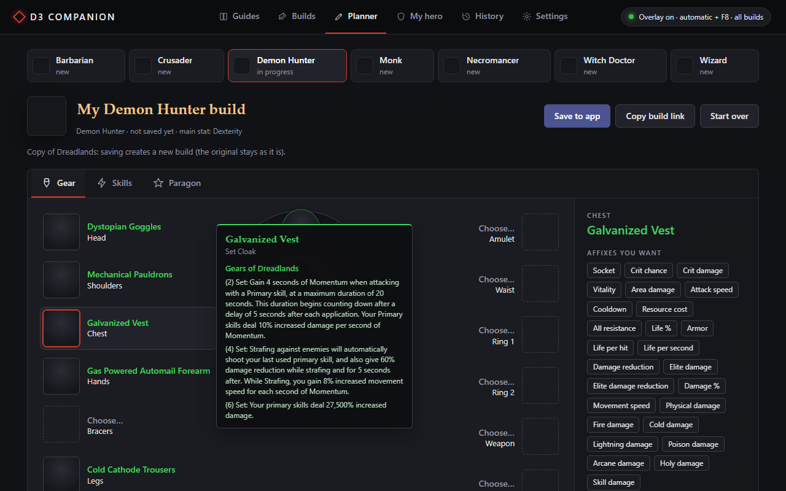

In-game badge
A badge shows up next to the item tooltip: fits, fits for now (for leveling) or doesn't fit, with the affixes it has and the ones it's missing.
Free · Windows 10 and 11 · Open source
Hover the item and press F8. D3 Companion compares it with the Maxroll build you picked and tells you what the item has, what it's missing and what to reroll at the Mystic.
Loading the version…
Fiendish Grips
Ancient Set Gloves
Fiendish Grips
✅ Unhallowed · build item
Has: Dexterity ✓ Vitality ✓ Crit chance ✓
Missing: Crit damage ✗
Tip: at the Mystic, reroll "Attack Speed" into Crit damage.

A badge shows up next to the item tooltip: fits, fits for now (for leveling) or doesn't fit, with the affixes it has and the ones it's missing.
Pick the class and the guide, or paste the link of any Maxroll build. The app brings the items, skills, runes and paragon, and the hotkey starts using the build right away.
In the app (Planner tab) or right here on the site, nothing to install: items, gems, Kanai's Cube, skills with runes and paragon, with the game's data. Hover an item to see what it does. Open the planner.
Type your BattleTag: the app gets your hero's gear from Blizzard's official API and shows, piece by piece, what already matches the build.
At which level each skill and rune of the build unlocks, and where to put your paragon points, in the game's order.
Tells you which affix is worth rerolling at the Mystic to complete the item. If you already rerolled one, it knows only that one can be rerolled again.
It reads the item tooltip the way you do: from the screen. It doesn't touch the game's memory or files.
Open the installer, click Next and Install. The app shows up in the Start menu. The text reader (OCR) is included.
Paste the link of a Maxroll guide (or pick one in the Guides tab). The build is imported and saved in the app, only the ones you use.
With the game in windowed fullscreen, hover the item and press F8. The badge shows up next to the tooltip.
Free, no sign-up and no ads.
The SHA-256 checksum of each version is on its release page on GitHub.
The app has no digital signature (those cost money). The first time, you'll see "Windows protected your PC": click More info and then Run anyway.
Want to check first? All the code is on GitHub, and the installer is made by a script that's there too
(ferramentas/empacotar.py).
The icons, the Portuguese names and the "My hero" tab use Blizzard's official API, which needs a free key
of your own. The LEIA-ME.txt in the app folder shows how to create one. Without the key, the badge and the builds work just the same.
%APPDATA%\D3 Companion\.env), and the app window can't even read it.The app only looks at the screen, like a video recording, and doesn't touch the game. Still, it's not made by Blizzard: use it at your own risk.
Use Windowed Fullscreen in Diablo III's video options. In exclusive fullscreen, Windows doesn't let other programs draw on top.
English: the Maxroll builds and the tooltip reader use the English names. The app window can be in English or Portuguese (in Settings).
Just the app itself: the installer puts it in the Start menu, with no administrator needed, and it uninstalls from Windows Settings. Prefer no install? The release also has a zip. Your data stays in %APPDATA%\D3 Companion, so updating or uninstalling doesn't erase anything.
Yes: in Settings, e.g. Ctrl+F8 or Alt+Q. If another program already uses the key, the app tells you which ones are free.